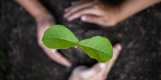
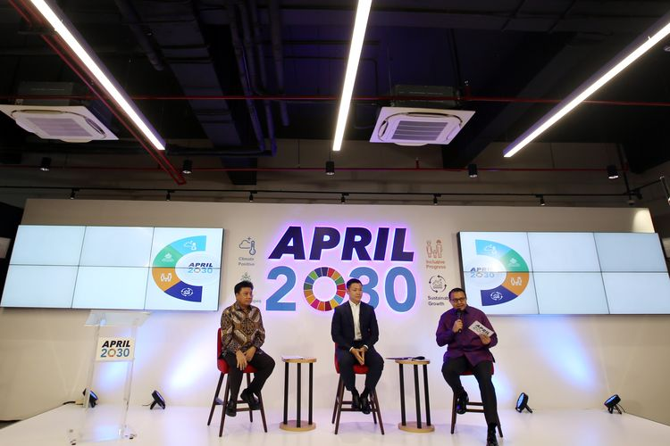
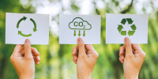

Salah satu tujuan utama dari SDGs adalah penanganan perubahan iklim atau yang disebut climate action dalam Bahasa Inggris. Dilansir dari Kompas.com, tujuan ke-13 ingin mengajak masyarakat untuk bersama-sama mengatasi perubahan iklim serta dampak yang ditimbulkan di seluruh penjuru dunia. Salah satunya adalah pemanasan global yang sedang marak terjadi beberapa tahun belakangan ini. Menurut situs resmi SDGs, tingkat pemanasan global akan melebihi 1,5 derajat Celcius pada tahun 2035 dan mencapai 2,5 derajat Celcius pada tahun 2100. Selain itu, dunia juga harus menerima fakta bahwa air laut sudah naik 2x lipat dari sebelumnya. SDGs mencetuskan untuk mengurangi penggunaan emisi gas rumah kaca hingga mencapai 43% di tahun 2030 dan berhenti pada tahun 2050. SDGs juga memiliki beberapa target, antara lain menguatkan bumi dalam hal menghadapi bencana alam, membuat kebijakan penanganan perubahan iklim nasional, mengutamakan pendidikan / penyuluhan terkait penanganan perubahan iklim, mengumpulkan dana untuk bersama-sama melangkah menuju bumi yang lebih hijau, serta mengajak negara kurang berkembang dan kepulauan kecil untuk turut menjadi partisipan dalam gerakan ini.
Dalam upaya mendukung SDGs, terkhusus tujuan ke-13, Indonesia dibantu dengan adanya program Asia Pacific Resources International Limited (APRIL) 2030. Grup APRIL memproduksi serat terbarukan dan produk bioteknologi serta mengatur hutan tanaman industri beserta kegiatan manufaktur di Provinsi Riau. APRIL merupakan “minion” dari perusahaan sumber daya global miliki Singapura, Royal Golden Eagle (RGE). APRIL2030 pertama dibentuk pada masa pandemi dan tumbuh dalam semangat perwujudan SDGs. Salah satu visi dari APRIL2030 adalah menciptakan iklim positif. Hal ini mengutamakan pelaksanaan 4 tujuan SDGs, yaitu tujuan nomor 7 (energi bersih dan terjangkau), nomor 9 (industri, inovasi, dan infrastruktur), nomor 13 (penanganan perubahan iklim), dan nomor 15 (ekosistem daratan). Dalam mencapai iklim positif, APRIL2030 menggunakan teknologi sains seperti pengurangan emisi karbon hingga 25%, dan pemasangan panel surya 20 megawatt sebagai sumber energi terbarukan (ramah lingkungan) pada 2021 hingga 2025.
Pada April 2016, sebanyak 175 negara yang terlibat dalam program SDGs menandatangani Perjanjian Paris yang isinya gerakan untuk menciptakan situasi yang rendah karbon, serta mengajak seluruh negara dunia untuk menjaga suhu global tidak mencapai lebih dari 2 derajat Celcius bahkan akan lebih baik lagi jika batas kenaikan hanya mencapai 1,5 derajat Celcius. Hasil perjanjian ini akan dilacak setiap 5 tahun. Selain itu, berupaya beradaptasi dengan perubahan iklim yang terjadi serta mencoba mencari cara sehingga menurunkan tingkat angka kematian akibat bencana alam. Akan tetapi, pada tahun 2020, suhu iklim justru semakin tidak terkendali, melenceng dari agenda Perjanjian Paris. Dana yang dikeluarkan untuk aktivitas penanganan iklim pun masih lebih sedikit dibandingkan investasi bahan bakar fosil, dan pengurangan risiko bencana alam masih belum mencapai target. Beberapa negara berkembang mulai mengusulkan rencana pertahanan lebih lanjut terhadap dampak perubahan iklim. Kondisi bumi bertambah buruk pada tahun 2023, efektivitas aksi dari SDGs mulai menurun. Hal ini terlihat jelas karena suhu bumi semakin panas, air laut semakin tinggi, pendanaan untuk aktivitas penanganan iklim masih belum tercukupi, serta minimnya pendidikan dan kurikulum yang menjelaskan siswa tentang pentingnya menjaga alam, bumi kita. Pada laporan kemajuan program SDGs tahun 2024, tujuan ke-13 tidak berjalan sesuai ekspektasi. Tujuan ke-13 masih mengalami pertumbuhan, tetapi mulai keluar jalur dari tujuan awal SDGs dan mengalami kemunduran. Dengan waktu tersisa 6 tahun, mungkinkah penanganan perubahan iklim terwujud hingga mencapai 100%?